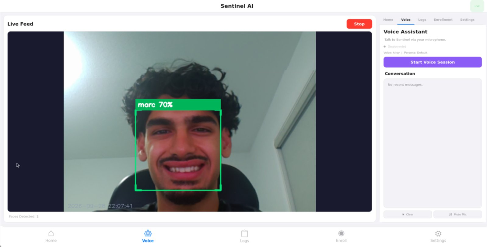
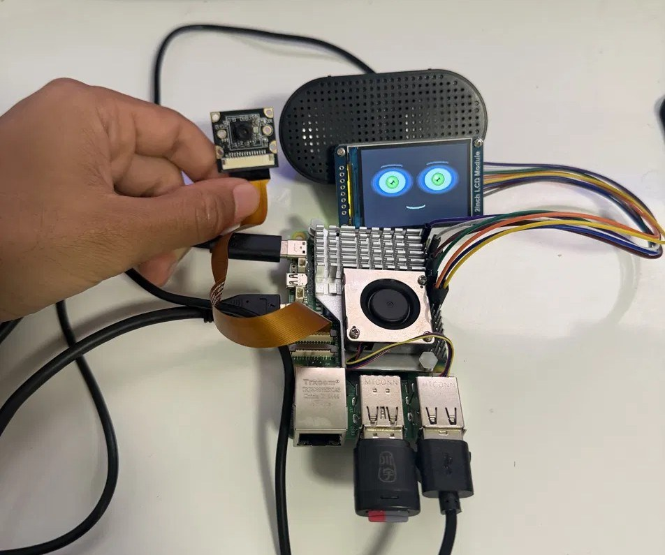

Sentinel AI
A Raspberry Pi doorbell camera that recognizes faces, unlocks for people it knows, and flags packages at the door.
Python, PyQt5, OpenCV, YOLOv8, face_recognition, OpenAI Realtime API, Raspberry Pi 5
- Nine-module Python app covering capture, object detection, face recognition, notifications, and a voice assistant powered by the OpenAI Realtime API.
- Unknown visitors get flagged and can be enrolled on the spot, so the known-faces database grows as people show up.
- PyQt5 desktop app with a live feed, face enrollment, colour-coded detection logs, and a settings panel. Camera processing runs on background threads so the UI never stalls.
- Capture layer works with both the Pi Camera and USB webcams, with a setup script for one-command install. Wired a 2-inch Waveshare LCD over GPIO that shows an animated face, and developed remotely over SSH and VNC.

